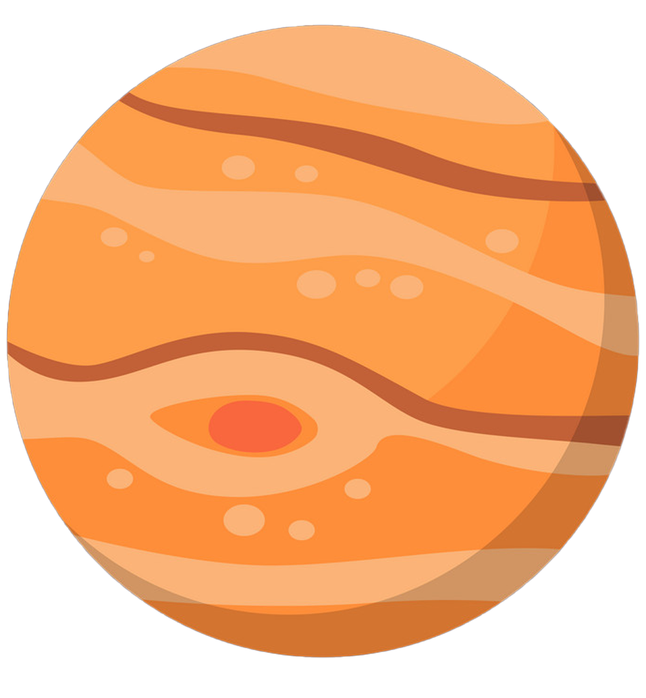
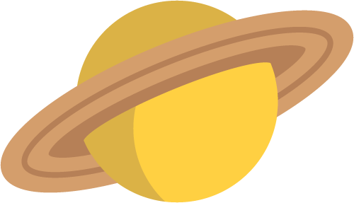
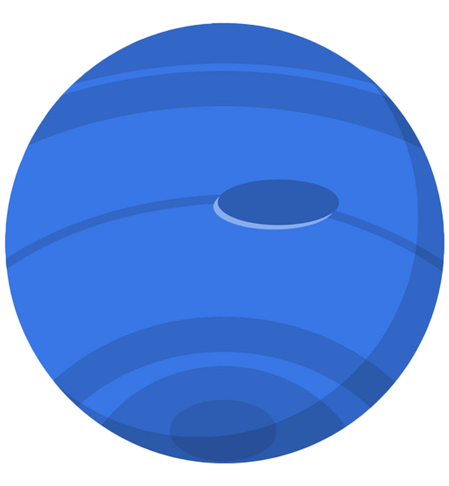
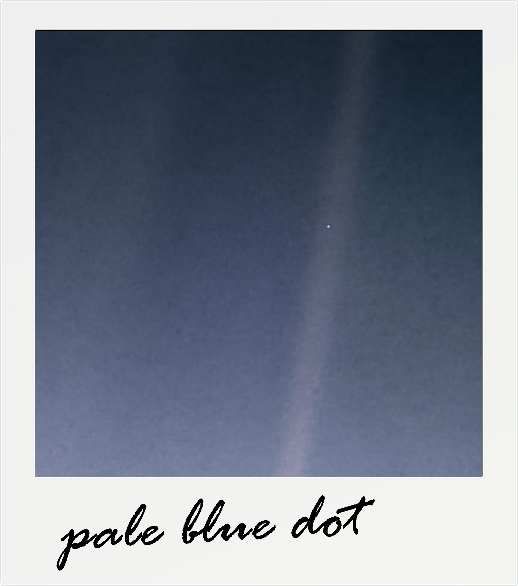
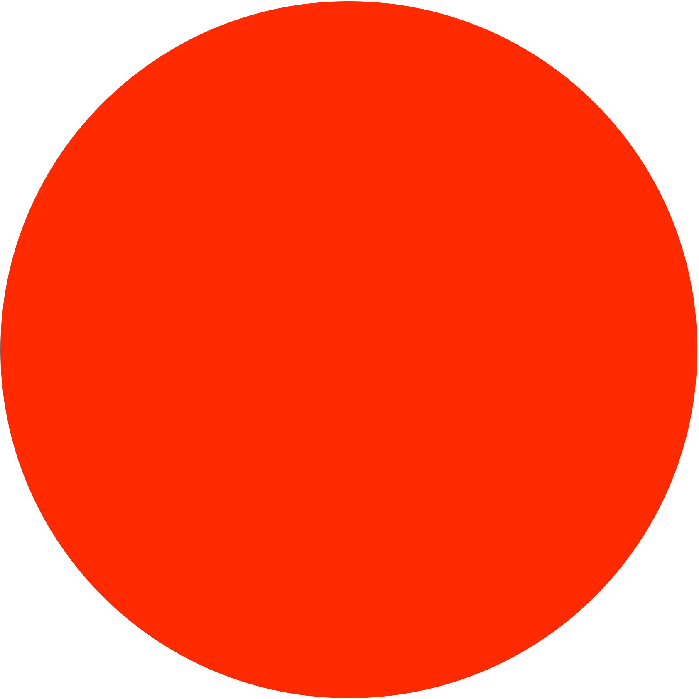
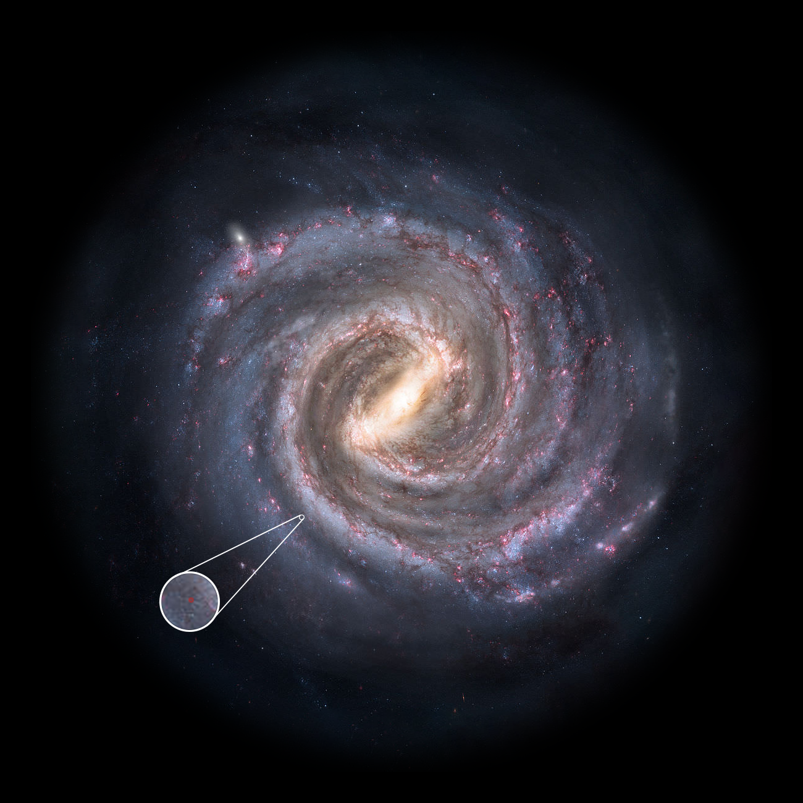

The moon would be about 3000 pixels away.
This is the furthest human has ever traveled.
This is the furthest human has ever traveled.
238, 000 miles from the nearest McDonald's, better wish you packed something good for dinner :D

And finally...just a rock floating 420,000 pixels away, 53 pixels wide.
Few more places to visit...
Here comes our first gas giant, Jupiter 9.2 million pixels from home and 1097 pixels wide.

It's moon Europa has an underground ocean. Maybe we can go scuba diving there someday.
Saturn, 14 million pixels from away and 822 pixels wide.

One of it's moon, Titan, is the furthest place a human spacecraft has soft-landed on.
Zipping past Uranus, we finally arrive at Neptune, the outer most planet of our solar system.

We've traveled a total of 2.8 billion miles, or 30 au (astronomical units, 1 au is the distance from Earth to the sun).
On Feb 14th, 1990, the Voyager 1 probe has well passed any planets and heading towards interstellar space. Under NASA's command, it turned around to take one last look at the planet Earth.

Came to be known as the Pale Blue Dot, the earth can be seen, less than a pixel in size, floating in a sun beam, ever so insignificant.
And finally, we arrive at our closest star, Proxima Centauri. A whole 4.2 light years away.
If the earth was the size of a marble, the distance we just traveled to scale would stretch 2 times around the actual Earth.
Now how much of our galaxy have we covered?
If the earth was the size of a marble, the distance we just traveled to scale would stretch 2 times around the actual Earth.
Now how much of our galaxy have we covered?

Yep, that’s how long 39,740,000,000,000 km (39 trillion) is compared to the size of our galaxy.
We virtually didn't move at all.
We virtually didn't move at all.
